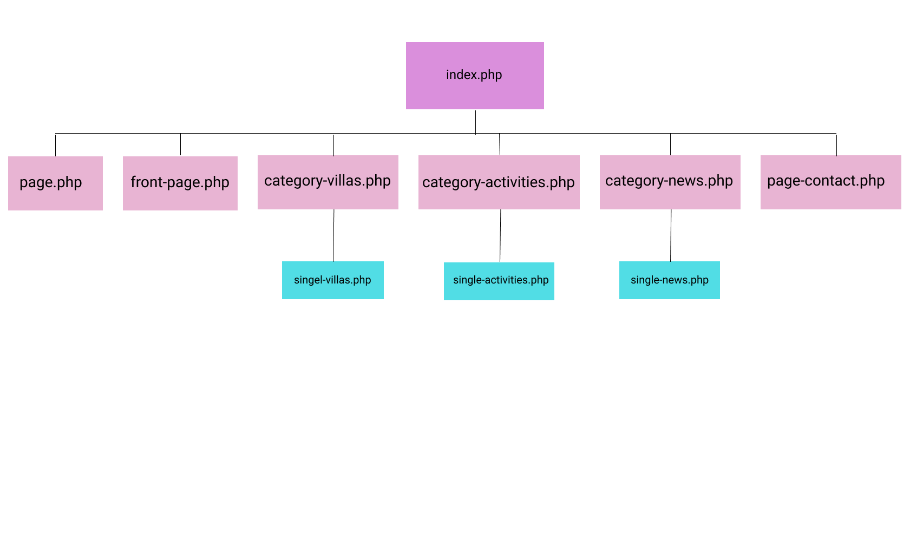
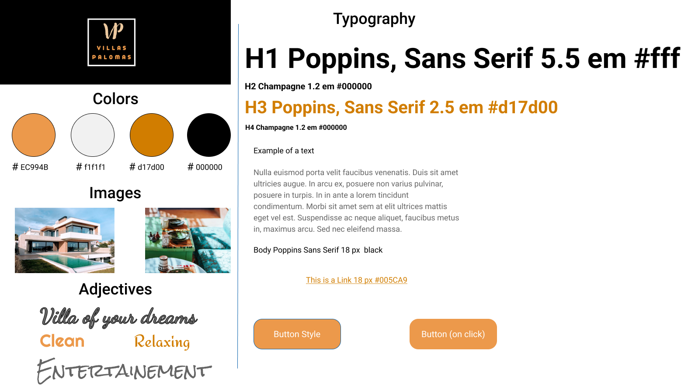

- Custom WordPress Theme Development
- Dynamic Content Management
- Villa Listings with Booking Options
- Activities and News Sections
- Contact Page with Staff Info and Form
- SEO Strategy and Optimization
- Accessibility and Usability Focus
- Design Deliverables: Sitemap, Wireframes, Mood Boards
- Figma Prototype and Visual Design
- CMS Editor Role Customization
- Project Documentation and Reports

Project Summary
This project involved the creation of a custom WordPress theme for a company that rents out villas and offers related activities. The theme was designed to be dynamic, allowing the client to easily manage and update content.
The development process was guided by design deliverables, including sitemaps, mood boards, wireframes, and design sketches, to ensure a functional and user-friendly website.
Accessibility was a key consideration, with the theme coded to adhere to WCAG guidelines. SEO strategies were also implemented to improve the site's visibility.
Detailed Problem Formulation
The project addressed the need for Villas Palomas, a villa rental company in Marrakech, to establish a WordPress website with a custom theme. Key requirements included:
- Developing the theme based on CMS principles for dynamic content management.
- Creating a user-friendly interface with clear navigation.
- Ensuring accessibility and usability for a wide audience.
- Enabling staff to create new subpages using `functions.php`.
- Showcasing villas with detailed information and booking options.
- Displaying activities and news on dedicated, dynamically updated pages.
- Providing contact information and a contact form.
- Implementing SEO best practices.
Design Process
The design process began with the creation of:
- Sitemap (as shown in Bild 4 of the report) [cite: 187]
- Mood board
- Wireframes
- Design sketches
These deliverables were used to structure the website and guide the development of the custom WordPress theme.
Sitemap outlining the website's structure (Home, Villas, News, Activities, Contact).
Moodboard representing the visual style and color palette for the project.
View the full set of wireframes and design sketches in the Figma prototype.
Key Features
The developed WordPress theme includes the following key features:
- **Dynamic Content Management:** The ability to easily update villas, news, and activities. [cite: 194, 199, 200]
- **Villa Listings:** Detailed pages for each villa with descriptions, specifications, and booking options (as shown in Bild 1 of the report). [cite: 196, 197]
- **Activities and News Sections:** Dedicated sections for displaying activities and news (as shown in Bild 2 of the report). [cite: 199, 200]
- **Contact Page:** Includes staff information and a contact form (as shown in Bild 3 of the report). [cite: 201, 202]
- **Widget Area:** For displaying promotions and offers. [cite: 209]
- **SEO Optimization:** Implementation of various SEO techniques to improve search engine visibility.
- **Customizable Editor Role:** A WordPress "Editor" role was created to allow staff to manage content. [cite: 199]
Example of a villa details page with booking information.
Activities listing page.
Contact page with staff information and form.
SEO Strategy
A comprehensive SEO strategy was implemented, including:
- Using Google Search Console and Site Kit for analysis.
- Installing Yoast SEO plugin.
- Optimizing URLs, meta descriptions, and H1 headings.
- Ensuring HTTPS security.
- Generating a sitemap.
- Improving page load speed (lazy loading).
- Using descriptive alt text for images.
- Creating clear and well-structured content.
- Responsiveness for mobile devices.
Website
The complete website for this project can be viewed at the following address:
http://example.com